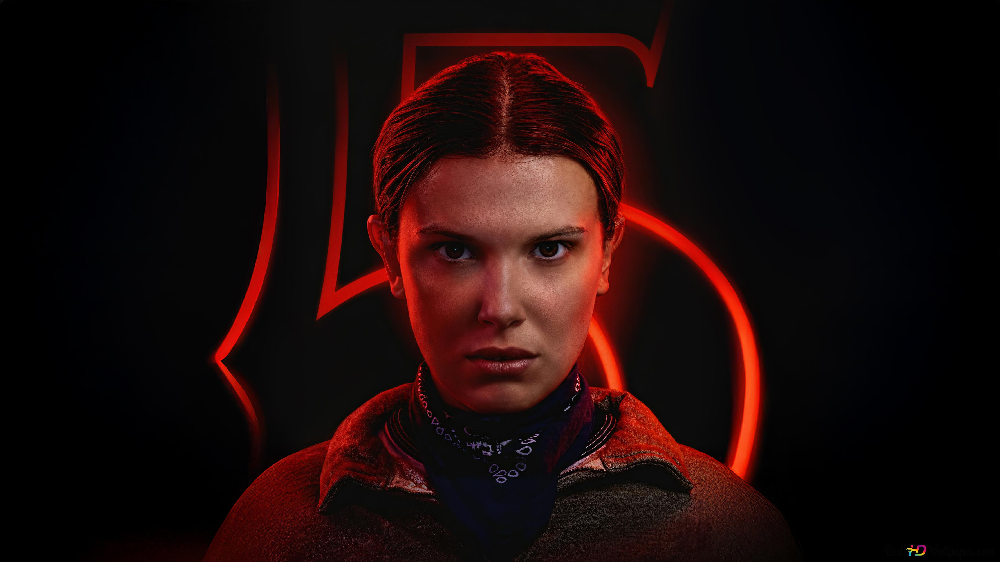

Eleven es una joven con habilidades telequinéticas y telepáticas
que escapó de un laboratorio secreto donde realizaban experimentos
con niños. A lo largo de la serie demuestra gran valentía, lealtad
y un fuerte deseo de proteger a sus amigos y a las personas que ama.
Descripción del personaje
Nombre del personaje: Eleven (Jane Hopper)
Nombre en la vida real: Millie Bobby Brown
Edad del personaje: Aproximadamente 15 años (temporadas más recientes)
Lugar de nacimiento: Laboratorio Nacional de Hawkins, Indiana (según la historia de la serie)
Pasatiempo favorito: Pasar tiempo con sus amigos y explorar sus poderes.